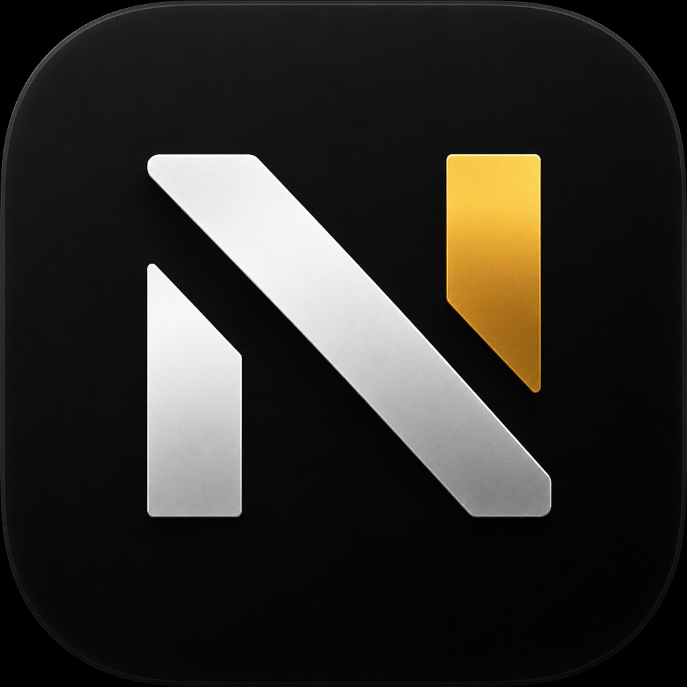

NURVANInformativa sul trattamento dei dati personali
Ultimo aggiornamento: · versione
Questa informativa spiega quali dati personali tratta l'app Nurvan (app Android, app iOS e versione web), perché li tratta, con chi li condivide e quali diritti hai. È resa ai sensi degli articoli 13 e 14 del Regolamento (UE) 2016/679 ("GDPR").
1. Titolare del trattamento
2. Quali dati trattiamo
Dati dell'account
- Nome, indirizzo email e password (conservata solo in forma cifrata con hash; non possiamo leggerla).
- Se accedi con Google o con Apple: l'identificativo che il fornitore ci comunica per il tuo account, l'email (anche l'indirizzo "relay" di Apple, se scegli di nasconderla) e, per Apple, un token che serve a revocare il collegamento quando elimini l'account.
- Data di registrazione, ultimo accesso, piano sottoscritto, consensi che hai dato e quando li hai dati.
Dati di allenamento
- Programmi, sessioni, serie, carichi, ripetizioni, RIR/RPE, note, calendario, statistiche.
Dati sulla salute (categorie particolari, art. 9 GDPR)
- Peso, misure e composizione corporea, foto dei check fisici.
- Alimentazione, diario alimentare, foto dei pasti, integratori.
- Terapie, farmaci ed esami del sangue che scegli di registrare.
- Sonno, battito a riposo, stato di recupero e risposte ai check-in, se li inserisci.
Nurvan non legge dati da altre app (per esempio Connessione Salute o Apple Salute): i valori di recupero sono stime calcolate a partire da quello che registri tu.
Dati del rapporto coach-atleta
- Se usi Nurvan con un coach: messaggi, check-in, foto e documenti che scambi con lui, programmi che ti assegna, note che scrive su di te.
Contenuti inviati alle funzioni di intelligenza artificiale
- Solo se attivi le funzioni AI: il testo delle domande al Coach AI, i file dei programmi da importare, le foto dei pasti e delle etichette, i codici a barre da riconoscere, con il contesto necessario alla risposta (per esempio il programma attivo o gli obiettivi nutrizionali).
Dati tecnici
- Indirizzo IP e dati della richiesta, trattati dai server per sicurezza e per limitare gli abusi (per esempio i tentativi di accesso).
- Registri degli errori, senza il contenuto dei tuoi dati.
Nurvan non usa pubblicità, non usa strumenti di profilazione o tracciamento di terze parti e non vende i tuoi dati.
3. Perché li trattiamo e su quale base giuridica
| Finalità | Base giuridica |
|---|---|
| Creare e gestire l'account, sincronizzare i dati tra i tuoi dispositivi, fornirti le funzioni dell'app. | Esecuzione del contratto (art. 6.1.b GDPR). |
| Trattare i dati sulla salute che registri, per mostrarteli, calcolare statistiche e, se hai un coach, condividerli con lui. | Consenso esplicito (art. 9.2.a GDPR), che dai alla registrazione e puoi revocare eliminando l'account. |
| Funzioni di intelligenza artificiale. | Consenso (artt. 6.1.a e 9.2.a GDPR), separato e revocabile in ogni momento da Impostazioni › Privacy e dati. |
| Sicurezza del servizio, prevenzione di abusi e frodi, registri tecnici. | Legittimo interesse del titolare (art. 6.1.f GDPR). |
| Adempimenti di legge (per esempio fiscali, se acquisti un piano a pagamento). | Obbligo legale (art. 6.1.c GDPR). |
4. Se usi Nurvan con un coach
Il coach che ti invita vede i dati che l'app condivide con lui per seguirti: allenamenti, check-in, alimentazione e integrazione, i check fisici che gli invii e, se non lo disattivi, terapia ed esami.
Terapia ed esami hanno controlli propri: la prima volta che apri una delle due sezioni l'app ti spiega come sono trattati, e dal riquadro «Privacy» di ciascuna scegli se il coach le vede, se il Coach AI può usarle e puoi eliminarle tutte, compresi i file dei referti allegati. Se le nascondi, il coach non le riceve e non può modificarle.
Per il rapporto con te il coach tratta questi dati come titolare autonomo: per le sue scelte su come usarli puoi rivolgerti direttamente a lui. Nurvan fornisce lo strumento e conserva i dati per conto dell'account del coach.
Gli account atleta creati da un coach vengono eliminati quando il coach li rimuove o elimina il proprio account. Puoi chiedere in qualsiasi momento la cancellazione dei tuoi dati al coach o al contatto privacy indicato sopra.
5. Con chi condividiamo i dati
I dati sono trattati da fornitori che agiscono come responsabili del trattamento (art. 28 GDPR), solo per quanto serve al servizio:
| Fornitore | Cosa fa | Dati |
|---|---|---|
| Render Services, Inc. | Server e database dell'app (regione: ). | Tutti i dati sincronizzati con l'account. |
| Cloudflare, Inc. | Rete e protezione del traffico verso i server. | Dati tecnici delle richieste. |
| Google LLC / Google Ireland Ltd. | Accesso con Google; API Gemini per le funzioni AI, solo se le attivi; caratteri tipografici della versione web. | Identità Google; contenuti inviati alle funzioni AI; indirizzo IP. |
| Apple Inc. | Accedi con Apple. | Identità Apple. |
| Resend (Plus Five Five, Inc.) | Invio delle email di recupero password. | Indirizzo email e codice di recupero. |
La ricerca alimenti interroga banche dati pubbliche (Open Food Facts, FatSecret, USDA FoodData Central) inviando solo il testo cercato o il codice a barre, mai dati del tuo account.
Non comunichiamo i dati ad altri, salvo richiesta dell'autorità nei casi previsti dalla legge.
6. Trasferimenti fuori dall'Unione europea
Alcuni fornitori (Google, Apple, Render, Cloudflare, Resend) hanno sede negli Stati Uniti e possono trattare dati fuori dallo Spazio economico europeo. Il trasferimento avviene sulla base della decisione di adeguatezza UE-USA (EU-US Data Privacy Framework) per i fornitori certificati, o delle clausole contrattuali standard approvate dalla Commissione europea.
7. Per quanto tempo conserviamo i dati
- I dati dell'account, di allenamento e sulla salute: finché l'account esiste. Quando lo elimini vengono cancellati subito dal database.
- Foto e documenti condivisi con il coach: al massimo 12 mesi dal caricamento, o prima se vengono rimossi o l'account viene eliminato.
- Le copie di sicurezza del database del fornitore di hosting vengono sovrascritte secondo il loro ciclo di rotazione.
- I dati inviati alle funzioni AI non vengono conservati dai server di Nurvan oltre il tempo della risposta; resta solo quello che l'app salva nel tuo account (per esempio la cronologia della chat con il Coach AI o un pasto riconosciuto da una foto).
8. I dati sul tuo dispositivo
L'app conserva sul telefono o nel browser una copia dei tuoi dati, per funzionare anche senza connessione. Sull'app Android questa copia è esclusa dai backup automatici di Google e dal trasferimento su un nuovo telefono: su un nuovo dispositivo i dati tornano accedendo al tuo account. Quando esci dall'account i dati restano sul dispositivo finché non li cancelli dalle impostazioni del telefono o del browser.
Fotocamera e microfono vengono usati solo quando li attivi tu (per scattare una foto o per l'input vocale); le notifiche servono per i promemoria che imposti.
9. I tuoi diritti
Puoi in ogni momento:
- accedere ai tuoi dati e riceverne una copia (in app: Impostazioni › Privacy e dati › Esporta i miei dati);
- correggerli direttamente nell'app;
- cancellarli eliminando l'account (in app: Impostazioni › Privacy e dati › Elimina account; oppure seguendo la procedura di eliminazione);
- revocare il consenso alle funzioni AI (Impostazioni › Privacy e dati), senza pregiudicare la liceità del trattamento fatto prima della revoca;
- chiedere la limitazione del trattamento, opporti ai trattamenti basati sul legittimo interesse, ottenere la portabilità dei dati;
- proporre reclamo al Garante per la protezione dei dati personali (www.garanteprivacy.it) o all'autorità del Paese in cui vivi.
Per esercitare i diritti scrivi a . Rispondiamo entro un mese.
10. Età minima
Nurvan è destinata a persone che hanno almeno anni. Alla registrazione ti chiediamo di confermarlo. Se veniamo a sapere che un account appartiene a una persona più giovane, lo eliminiamo.
11. Nurvan non è un dispositivo medico
Stime, statistiche e suggerimenti dell'app (compresi quelli delle funzioni AI) servono a organizzare l'allenamento e l'alimentazione e non sostituiscono il parere di un medico o di un professionista sanitario. Non usare Nurvan per diagnosi o per decidere terapie.
12. Sicurezza
Le comunicazioni con i server sono cifrate (HTTPS). Terapia ed esami non entrano in classifiche, XP o immagini da condividere, e arrivano al Coach AI solo se lo attivi o se confermi l'invio del singolo valore. Le password sono conservate con hash. Le sessioni possono essere chiuse da remoto (per esempio cambiando password). Foto e documenti condivisi con il coach sono accessibili solo tramite collegamenti firmati e a scadenza.
13. Modifiche
Se cambiamo questa informativa aggiorniamo la data e la versione in alto. Quando le modifiche riguardano il consenso, l'app te lo chiede di nuovo al primo accesso.